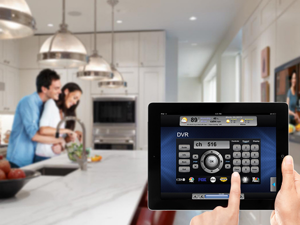

<section class="my-5">

        
        <div class="row">
      
          <!-- Grid column -->
          <div class="col-lg-5">
      
            <!-- Featured image -->
            <div class="view overlay rounded z-depth-2 mb-lg-0 mb-4">
              
              <a>
                <div class="mask rgba-white-slight"></div>
              </a>
            </div>
      
          </div>
          <!-- Grid column -->
      
          <!-- Grid column -->
          <div class="col-lg-7">
      
            <!-- Category -->
            <h3 class="font-weight-bold mb-3"><strong>Crestron service</strong></h3>
            <!-- Post title -->
            
            <!-- Excerpt -->
            <p>The amount of technology in buildings and homes is rapidly growing and changing.
               The <br> most significant change is that everything is now on the network: audio, video,
                voice, data, lighting, security, digital signage, Building Management Systems (BMS)
                , shades, and <br> heating & cooling systems.
               The design and implementation of these technologies, however,<br> is typically 
               done independently. As a result, each one operates on a separate platform,
                adding many layers of complexity and inefficiency.

              Crestron builds 
              the technology that integrates all of the disparate systems 
              and devices in buildings and homes on a single open platform so they can 
              communicate and work together intelligently. We provide the only solution that
               enables you to monitor, manage and control everything from one platform, anywhere,
                anytime, using touch screens, remotes, and smart devices.</p>
            <!-- Post data -->
            
            <!-- Read more button -->
            
     </div>
    </div>
    </section>       
      